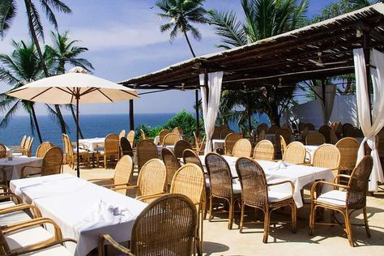
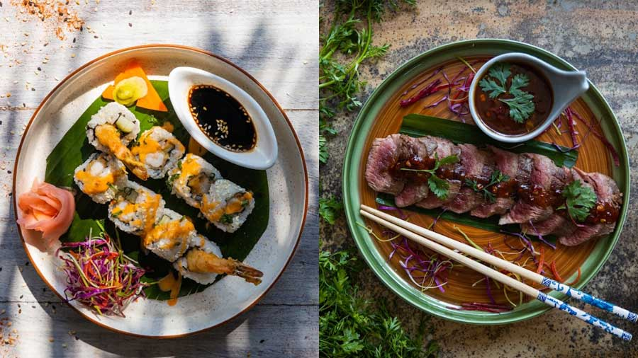
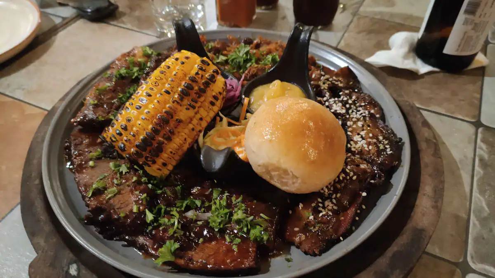

Thalassa
1. Thalassa is a renowned beachside restaurant located in
Siolim, Goa, known for its Greek and Mediterranean cuisine. The restaurant
is situated in a picturesque setting overlooking the Arabian Sea, with an
inviting ambiance that attracts tourists and locals alike. The menu offers
an array of delicious seafood dishes, mezze platters, and cocktails, prepared
using fresh and locally sourced ingredients. Thalassa also hosts live music
events and parties, making it a go-to spot for those looking to unwind and
indulge in good food, drinks, and entertainment. The friendly staff and
impeccable service further enhance the dining experience, making Thalassa
a must-visit destination in Goa. Visit Thalassa for more info.

Mama Miso
2. Mama Miso is a charming Japanese and Asian fusion restaurant
located in Arossim, Goa. The restaurant offers a unique blend of Japanese and
Asian cuisine, prepared using authentic ingredients. The menu includes a variety
of sushi, sashimi, ramen, and stir-fry dishes that are sure to tantalize your
taste buds. The ambiance is warm and inviting, with traditional Japanese decor
and comfortable seating. The staff is courteous and knowledgeable, making the
dining experience all the more enjoyable. Mama Miso is the perfect spot for those
looking for an exquisite Japanese and Asian culinary experience in Goa.Visit Mama Miso for more info.

Ritz Classic
3. Ritz Classic is a well-known restaurant chain in Goa that offers
a delectable range of Goan cuisine. With multiple locations across the state, Ritz
Classic is a go-to spot for locals and tourists alike. The menu boasts of an extensive
range of dishes, including popular favorites such as tandoori chicken, butter garlic
prawns, and fresh fried fish. The restaurants have a cozy and inviting ambiance, with
comfortable seating and prompt service. The staff is friendly and ensuring a pleasant
dining experience for all patrons. Ritz Classic is a place for those looking for a
taste of authentic Goan Cuisine.Visit Ritz Classic for more info.

Cuebebar The Original SmokeHouse
4. A must-visit for steak lovers in Goa is Cuebebar The Original
SmokeHouse, a popular restaurant specializing in smoked and grilled meats. The
menu features a wide variety of dishes, ranging from succulent ribs to juicy
burgers, all cooked to perfection using traditional smoking and grilling techniques.
With its rustic decor and lively ambiance, Cuebebar The Original SmokeHouse provides
a unique dining experience that is perfect for a night out with friends or a romantic
dinner for two. The attentive staff is always available to offer recommendations and
ensure that every guest is satisfied with their meal. For an unforgettable steakhouse
experience in Goa, look no further than Cuebebar The Original SmokeHouse.Visit Cuebebar The Original SmokeHouse for more info.

Beno Restaurant
5. Beno is a delightful restaurant in Goa that offers an array of
mouth-watering dishes on its menu. From the classic Caprese salad to the creamy
risotto, every dish is made using fresh, locally sourced ingredients. The restaurant
has a warm and inviting ambiance, with tasteful decor and comfortable seating that
create a cozy and intimate dining experience. The ambiance is perfect for a romantic
dinner or a relaxing meal with friends and family. Beno also offers an extensive selection
of wines, cocktails, and mocktails to complement your meal. With its friendly staff
and relaxed atmosphere, Beno is a must-visit for those looking to enjoy great food
and a pleasant dining experience in Goa.Visit Beno for more info.